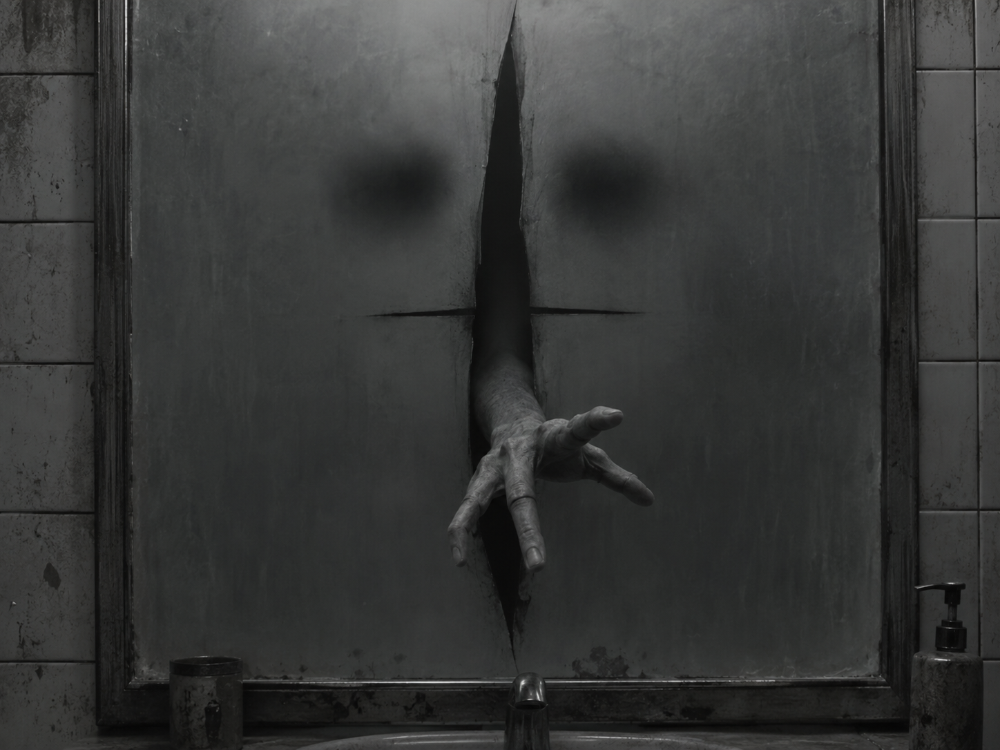

O espelho não refletia mais nada. Não mostrava o quarto, não mostrava a porta, não mostrava Clara. Apenas uma superfície cinzenta, opaca, como cinza sobre cinza, sem profundidade, sem fim.
Comece a leitura pelo Capítulo 1. Cada capítulo deve ser lido em ordem.